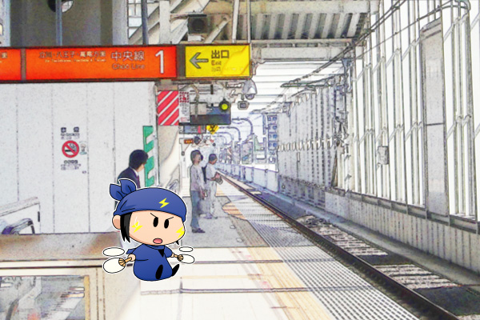

|
ネズミ(2)

ネズミと一緒に妖精界を旅行するとネズミはどんどん先に行ってしまいそうなので、あえて人間界を一緒に旅行してみることにしました。ネズミが旅のパートナーになった理由は皆さんのご想像に任せるとして、人間界の旅行はネズミにとってどんな風に映るんでしょうね。
ネズミ「その電車とやらに乗るのでござるか・・・？」
「ひょっとしてネズミは電車に乗るの初めて！？
もしかして怖かったりする？」
ネズミ「拙者の修行と比べれば何てことないでござる」
「やっぱり怖いんだ！」
・・・ネズミファンの方はそんなやり取りを想像してみてください（ネズミにそんな弱点はない？）。ネズミとだったら皆さんはどこへ行ってみたいのか、掲示板などでぜひ教えてくださいね。
絵の背景は私の地元駅のホームです。どこから撮影したのか、JR武蔵小金井駅に行かれた際はその場所をぜひ探してみてくださいね（誰も探さないか^^;）。写真をそのまま使うと手抜き過ぎるので、妖精の雰囲気に合うように階調を多少落としたりしましたが、アニメ風にはまだまだ遠いですね(^^;。(2009/9/26) |